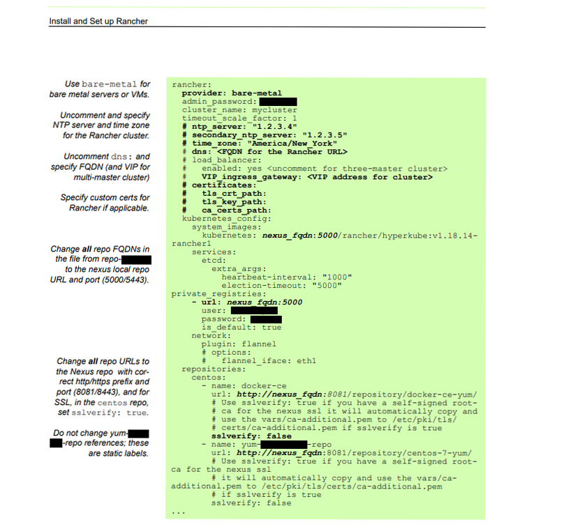
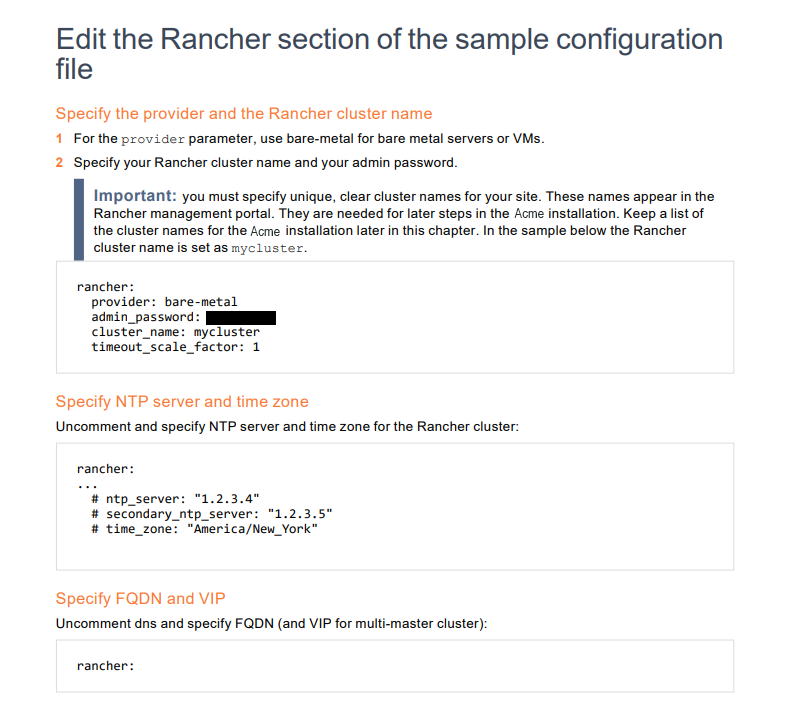
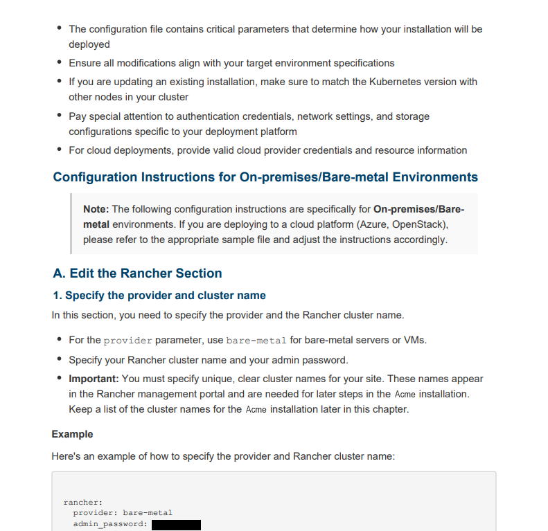

As part of a two-person team, I worked on two consecutive authoring-platform migrations: 7 guides from FrameMaker to MadCap Flare, then 30+ guides from MadCap Flare to Confluence — driven by a business decision, not a change in documentation needs. Both migrations meant preserving content while adapting its formatting and structure to each platform's capabilities.
For the FrameMaker → MadCap Flare migration, I audited the style catalogs to separate styles still in use from obsolete ones, and documented a performance issue with externally linked images for the team to account for.
For the MadCap Flare → Confluence migration, I co-authored a style-conversion spec covering 13+ paragraph styles and defined manual steps for cases the automated conversion couldn't handle, then executed the full migration with my colleague.
The same Rancher installation section, shown across all three platforms, illustrates how the content changed with each migration.

Instructional notes sat in a narrow left column next to a single large code block — a print-oriented layout inherited from the original authoring convention.

The content became numbered steps with a distinct callout style, while the code example was separated into its own block below the instructions.

The current version uses a two-level heading structure (section / numbered sub-step), with the code renamed and framed explicitly as an “Example,” separate from the instructions.
he migration brought 30+ guides into a consistent Confluence structure. Because Confluence is used company-wide and appears in internal search results, colleagues can now spot and report documentation issues directly, without having to go through the customer portal or search through a PDF.